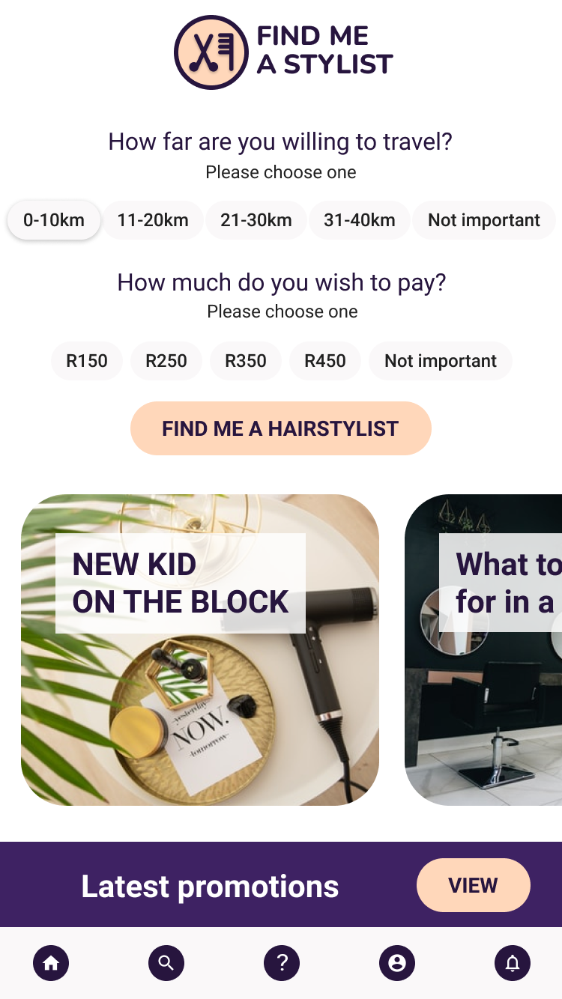

Assisting users to find a hairstylist close to them
The haircare market in South Africa is forecasted to grow by approximately 5.7% over the next five years. Although the haircare industry has been impacted by the COVID-19 pandemic and concomitant hair salon closures, there has been an increase in demand for hair care services as lockdown levels decrease. The pandemic has necessitated hairstylists to reconsider how they reach and service clients. For example, due to health concerns, some clients may prefer for a hairstylist to visit them at home.
I used the double diamond design framework to structure my work on this project. This non-linear framework enables one to:
The process is useful as a framework to ensure that one stays focused on user needs.
Although users are able to use existing digital platforms to search for a hairstylist (e.g. Google Search and Maps), the challenge is that the process can be haphazard and difficult to navigate especially for users that are not tech-savvy.
A mobile app that can enable users to search for a hairstylist close to them, view information about the hairstylist and their portfolios, select a hairstylist, and book an appointment. The user can also save their preferences in the app, making it easy to go back to the information they need should they need to search for a hairstylist again.
During the discovery phase, I wanted to learn about how users currently find a hairstylist and book haircare appointments and how they experience their current method of finding a hairstylist (if necessary) and booking an appointment. I conducted semi-structured user interviews to explore and gain a deeper understanding of users’ needs and behaviours.
Users want to feel confident in their decision-making by viewing photographs of the venue, “meeting their stylist”, obtaining social proof (client reviews), and viewing the hairstylist’s portfolio
"How might we provide more information to individuals so that they can experience less uncertainty when needing to find a new hairstylist?"
The initial sketches included the loading screen, main view, and what the search results might look like. I started by doing sketches on paper to capture my concepts for these screens as informed by the user interview insights. The second iteration of the papers sketches was informed by applying design principles:
I completed a feature analysis based on the user interview insights. The process was as follows:
The feature analysis showed that the following features were important to users:
At the beginning of my design process I created wireframes for testing purposes. I created low-fidelity wireframes and a clickable prototype in Figma to be able to test the flows with users.
Once the clickable low-fidelity prototype was completed, I conducted usability sessions with 2 users.
My process:
It was interesting for me to observe how users completed the tasks and what their challenges were. As a result of the usability tests, I made changes to the prototype to address the following usability issues:
After testing the views, I created a high-fidelity prototype that reflected the findings from the usability study. I aimed for a minimal design using design principles such as balance, white space, alignment, and a clear visual hierarchy. The Figma design file also contained a Style Guide and Pattern Library to ensure a continuous brand experience.
I used the WebAim color contrast checker to check for accessibility in terms of color. All the elements on the screens passed on WCAG AA and AAA levels. I decided to increase the font on the “small print” in order to make it more legible for users with reduced eyesight.
After creating the high-fidelity prototype I conducted another usability study with 4 users. The usability study was unmoderated and remote using Lookback.
The key insights from the usability test were as follows:
Based on the usability study insights, I updated the main view screen.
KPI: Increase task success rate
Hypothesis:
Users may not notice when options are selected for travel distance and budget. Changing the active state of the option buttons may assist the user to know that they have selected the option and can now proceed to click on the “Find me a stylist” button.
The final clickable prototype shows the two flows created:
Be organised It is important to have a framework and an understanding of the non-linear process to help you find your way in a project. It is important to document your process and decisions throughout the process in order to reflect on what eventually worked more effectively to solve the problem. On a practical level it is important to be organised when working in Figma especially with creating and naming components in order to capitalise on automatic updates across all screens
I need to learn more about the framework. For the Udacity course I used the double diamond framework but I will need to internalise the different aspects of it and how it is implemented in practice. I will start building a case study as I start working on a new project and keep visuals and reflections updated throughout the project. I need to complete a further course specifically about Figma and also practice more.
I intend to continue designing this app in order to further iterate on my learning. I continue to learn about UX design.